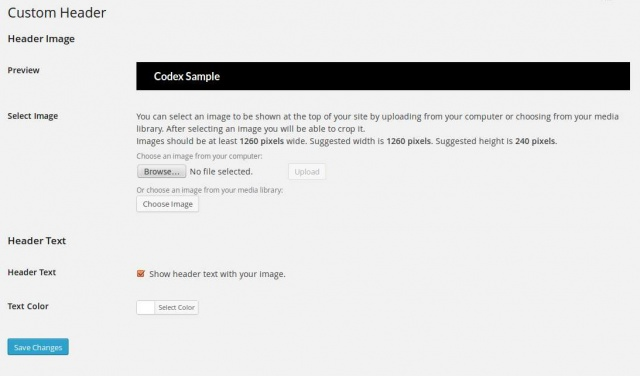

Languages:
English •
Français •
Hrvatski •
Header Screen 日本語
Português do Brasil •
中文(简体) •
(Add your language)
WordPress Version 4.1 or later
WordPress Version 4.1 removed this custom header screen and the link of Appearance > Header menu was directed to the Header Image section in the Theme Customizer.
Refer the Customize Screen for more detail information about Customizer.
Prior to WordPress Version 4.1, in the Appearance Header Screen, if allowed by your current theme, you can customize the header of your theme by uploading and configuring an image.
Back to Administration Screens.

- Preview
- In this box, the uploaded image, or the selected color is available for previewing.
- Select Image
- Upload an image for your header. Images of exactly 960 × 250 pixels will be used as-is.
- Choose an image from your computer.
- Choose an image that is already in your Media Library.
- Default Images
- The Twenty Eleven Theme comes with six default images you can choose from.
Once you add an image you will get some more options:
- Uploaded Images
- Select from images that you have already uploaded to the header screen.
- Remove Image
- Click the Remove Header Image button to remove the header image. You will not be able to restore any customizations.
You can also make changes to your header text:
- remove the header text
- change the header text colour.
- The Crop Header Image feature allows you to select an area of an image and then delete all but that selected area. When initially displayed, WordPress shows that maximum sized crop area in a lighter shade as represented by the northern third of the US States map in this example. When using a theme such as the WordPress Twenty Seventeen theme the header image is expected to be 960 × 250 pixels so that is the size of the selected area shown. You can click, hold, and drag the lighter crop selection area and down (or up) the image to the desired point. Also, you can click one of the eight crop resizer boxes (little square box on each corner and each side) to move the crop selection area.
- Crop and Publish
- Click this button and the cropped area of the image is saved as the header image. At this point the image is displayed and the preview section a message saying Header updated. Visit your site to see how it looks. displays with a link to view your site.
Save Changes
- Click the Save Changes button to ensure any changes you have made are saved. Once you click the button, a confirmation text box will appear at the top of the page telling you your Header has been saved.
Related
Changelog
- 3.0 : New Screen
- 4.1 : Custom header was removed. Appearance - Header menu item link directly to the Customizer.
{kind=link}
{kind=link}